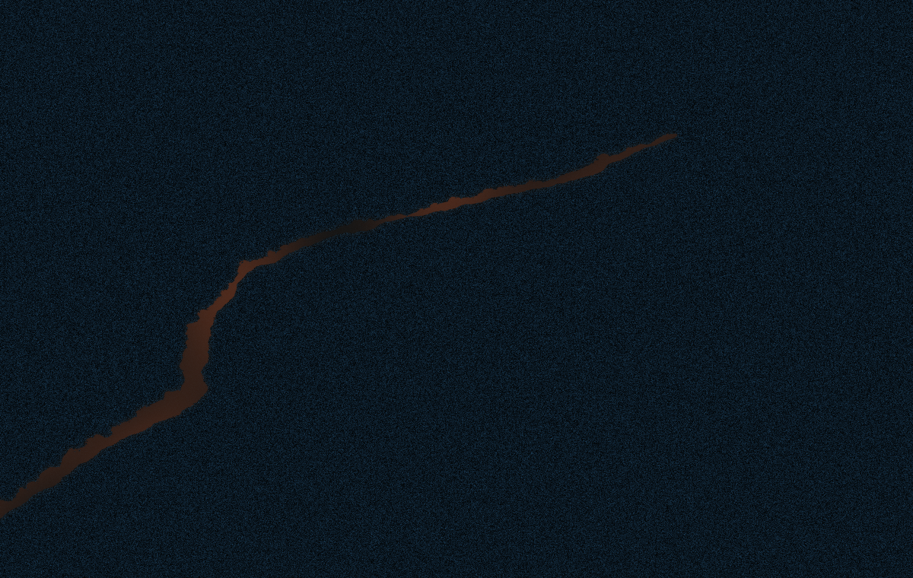

02 · HINDCAST
PASTWhere did it originate?
19.0°N18.5°N18.0°N
Backward drift points to 18.72°N, 72.10°E with a 9.6 km uncertainty radius.

Backward drift points to 18.72°N, 72.10°E with a 9.6 km uncertainty radius.
Forward envelope uses INCOIS currents and ERA5 wind. Position error ±4.6 km.
Vessel A crosses the origin window; other tracks are filtered as lower relevance.